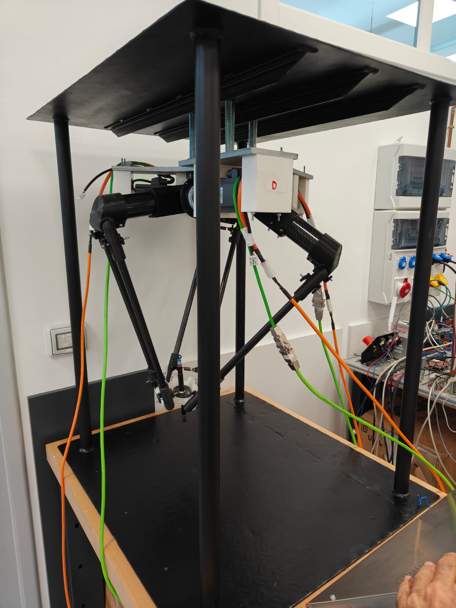

Robotaren Ikuspegi 360º
Vista 360º del Robot
Klikatu simuladorean tamaina handitzeko
Haz clic en el simulador para ampliar el tamaño
1. Arduradunaren datuak 1. Datos del responsable
Izena: Uraitz Ormaza
Kontaktua: uormaza@fpbarakaldolh.eus
Laborategia: Automatizazio gela.
Nombre: Uraitz Ormaza
Contacto: uormaza@fpbarakaldolh.eus
Laboratorio: Aula de automatización.
Izena: Kepa Bastegieta
Kontaktua: kbasteguieta@fpbarakaldolh.eus
Laborategia: Automatizazio gela.
Nombre: Kepa Bastegieta
Contacto: kbasteguieta@fpbarakaldolh.eus
Laboratorio: Aula de automatización.
2. Deskribapena eta Laburpena 2. Descripción y Resumen
Zer da Robot Delta bat?
Robot Delta bat (edo robot paraleloa) hiru beso artikulatu dituen robot industriala da, goiko oinarri finko bati lotuta daudenak. Beso hauek triangelu formako egitura bat osatzen dute (hortik dator "Delta" izena) eta erdiko hiltze edo plataforma bati eusten diote.
Gainerako robotak ez bezala, motorrak oinarri finkoan daude eta ez besoetan; ondorioz, besoak oso arinak dira eta abiadura eta zehaztasun ikaragarria lortzen dute.
Zertarako erabiltzen da?
Batez ere "Pick and Place" (hartu eta utzi) lanetarako erabiltzen da. Hau da, gauza txikiak eta arinak azkar mugitzeko:
- Elikagaien industrian: Txokolateak, gailetak edo fruituak azkar biltzeko eta kaxetan sartzeko.
- Farmazian eta kosmetikan: Pilulak, potoak edo txertoak sailkatzeko.
- Elektronikan: Mikrotip-ak edo pieza txikiak zirkuituetan doitasun handiz jartzeko.
Barakaldoko Delta Robota

Maketa hau Siemens teknologian oinarritutako robotika industrialeko sistemen erakusle garbia da. Bere funtzionamendua hiru zutabe nagusitan oinarritzen da:
1. Kontrol Adimenduna (S7-1500TF)
- Sistemaren muina S7-1500TF motako CPU bat da.
- "T" (Technology): Kontrolatzaile honek barne-algoritmo espezifikoak ditu ardatzen arteko interpolazio zinematikoa egiteko. Robotak badaki motor bakoitzak zein angelu hartu behar duen bentosa X, Y, Z koordenatu zehatz batera eramateko.
- "F" (Fail-safe): Segurtasun industrialeko funtzioak (Emergency Stop, etab.) integratzeko gaitasuna.
2. Mugimenduaren Exekuzioa (SINAMICS V90)
- Mugimendu fisikoa hiru SINAMICS V90 servo drivek eta haiei lotutako serboek egiten dute.
- Komunikazioa: Drive-ak eta PLC-a PROFINET bidez lotuta daude denbora errealeko kontrolerako. (TELEGRAMA 105, IRT)
- Feedback-a: Motorrek kodetzaileak (encoder absolutua) dituzte, PLCari uneoro euren posizio zehatzaren berri emateko.
3. Periferia Dezentralizatua (ET 200)
- Sarrerak/Irteerak: Hemen konektatzen dira frenua eta bentosaren elektrobalbula, aire-presio sentsoreak edo segurtasun amaiera-etengailuak.
- Egitura: Kableatu zentralizatua saihesten du, instalazio garbiagoa eta modularra lortuz.
4. Programazio Ingurunea (TIA Portal)
Software mailan, Objektu Teknologikoak (TO) erabiltzen dira. Horri esker, robot osoa "objektu" bakar gisa tratatzen da, programazioa asko erraztuz Motion Control bloke estandarren bidez.
Bideo erakustaldiak
Egin klik bideoa YouTuben erreproduzitzeko:


¿Qué es un Robot Delta?
Un robot Delta (también conocido como robot paralelo) es un tipo de robot industrial que consta de tres brazos articulados conectados a una base superior fija. Estos brazos se unen en una plataforma móvil inferior en forma de triángulo (de ahí el nombre "Delta").
Su principal característica es que los motores están instalados en la base fija y no en los brazos. Esto hace que la estructura móvil sea extremadamente ligera, permitiendo velocidades y aceleraciones asombrosas con una gran precisión.
¿Para qué se utiliza?
Se utiliza principalmente para tareas de "Pick and Place" (recogida y colocación) de objetos ligeros a alta velocidad:
- Industria alimentaria: Empaquetado rápido de bombones, galletas o frutas en sus envases.
- Farmacéutica y cosmética: Clasificación y ordenación de blísteres, viales o botes pequeños.
- Electrónica: Colocación de microchips y componentes diminutos en placas de circuitos con máxima precisión.
Robot Delta de Barakaldo
Esta maqueta es un claro exponente de los sistemas de robótica industrial basados en tecnología Siemens. Su funcionamiento se basa en tres pilares principales:
1. Control Inteligente (S7-1500TF)
- El núcleo del sistema es una CPU tipo S7-1500TF.
- "T" (Technology): Este controlador tiene algoritmos internos específicos para realizar la interpolación cinemática entre los ejes. El robot sabe qué ángulo debe tomar cada motor para llevar la ventosa a una coordenada X, Y, Z exacta.
- "F" (Fail-safe): Capacidad de integrar funciones de seguridad industrial (Parada de Emergencia, etc.).
2. Ejecución del Movimiento (SINAMICS V90)
- El movimiento físico lo realizan tres servo drives SINAMICS V90 y sus servos asociados.
- Comunicación: Los drives y el PLC están conectados mediante PROFINET para el control en tiempo real. (TELEGRAMA 105, IRT)
- Feedback: Los motores tienen codificadores (encoder absoluto) para informar en todo momento al PLC de su posición exacta.
3. Periferia Descentralizada (ET 200)
- Entradas/Salidas: Aquí se conectan el freno y la electroválvula de la ventosa, sensores de presión de aire o interruptores de final de carrera de seguridad.
- Estructura: Evita el cableado centralizado, logrando una instalación más limpia y modular.
4. Entorno de Programación (TIA Portal)
A nivel de software, se utilizan Objetos Tecnológicos (TO). Esto permite tratar todo el robot como un único "objeto", facilitando mucho la programación a través de bloques estándar de Motion Control.
Demostraciones en video
Haz clic para reproducir el video en YouTube:
3. Helburuak 3. Objetivos
Tutorial honen amaieran, ikaslea gai izango da robot delta osoa martxan jartzeko:
1. Hardware Konfigurazioa eta Komunikazioa (praktika 0.1 Konfigurazioa)
- PROFINET Integrazioa: TIA Portalean PLC-a, ET 200 periferia eta hiru V90 drive-ak sarean integratzea.
- Parametrizazioa: Drive-en eta motorren doikuntzak egitea (V-Assistant edo TIA Portal bidez).
2. Objektu Teknologikoen (TO) Kudeaketa (praktika 1 Objetu teknologikoak)
- Ardatz Linealak: Hiru
TO_PositioningAxisobjektu konfiguratzea. - Zinematika:
TO_Kinematicsobjektua sortzea, besoen neurri errealak sartuz robotak bere burua espazioan ($X, Y, Z$) koka dezan. - Homing-a: Ardatz bakoitzaren "zero" puntua bilatzeko prozedura programatzea.
3. Mugimendu Bakunak (JOG) eta Eskuzko Kontrola (praktika 2 ardatz bakoitzaren kontrola)
- Commissioning: TIA Portal-eko tresnekin motorrak banan-banan mugitzea norabideak eta mugak egiaztatzeko.
- Koordinazioa: Robotaren muturra (bentosa) espazioan mugitzea, ardatzen arteko sinkronizazioa ikusteko.
4. Mugimendu zinematikoak (praktika 3 PtP mugimenduak, linealak eta zirkularrak)
- Motion Blokeak:
MC_MoveLinearedoMC_MoveDirectAbsolutefuntzioen erabilera koordenatu kartesiarrekin. - Periferiaren Kontrola: ET 200 moduluaren bidez elektrobalbulak eta frenuak mugimenduarekin batera gobernatzea.
5. Pick & Place sekuentziaren programazioa (praktika 4 Pick & Place)
- Logika: Objektu bat $P1$ puntuan jaso eta $P2$ puntuan uzteko sekuentzia osoa.
- Motion Blokeak:
MC_MoveLinearedoMC_MoveDirectAbsolutefuntzioen erabilera koordenatu kartesiarrekin. - Periferiaren Kontrola: ET 200 moduluaren bidez elektrobalbulak eta frenuak mugimenduarekin batera gobernatzea.
Al final de este tutorial, el alumno será capaz de poner en marcha todo el robot delta:
1. Configuración Hardware y Comunicación (práctica 0.1 Configuración)
- Integración PROFINET: Integrar en red el PLC, la periferia ET 200 y los tres drives V90 en TIA Portal.
- Parametrización: Realizar los ajustes de los drives y motores (mediante V-Assistant o TIA Portal).
2. Gestión de Objetos Tecnológicos (TO) (práctica 1 Objetos tecnológicos)
- Ejes Lineales: Configurar tres objetos
TO_PositioningAxis. - Cinemática: Crear el objeto
TO_Kinematicsintroduciendo las medidas reales de los brazos para que el robot se sitúe en el espacio ($X, Y, Z$). - Homing: Programar el procedimiento de búsqueda del punto "cero" de cada eje.
3. Movimientos Simples (JOG) y Control Manual (práctica 2 kontrol individual de eje)
- Puesta en marcha: Mover los motores individualmente con las herramientas de TIA Portal para comprobar direcciones y límites.
- Coordinación: Mover el extremo del robot (ventosa) en el espacio para observar la sincronización entre los ejes.
4. Movimientos cinemáticos (práctica 3 movimientos PtP, lineale y circulares)
- Lógica: Secuencia completa para recoger un objeto en el punto $P1$ y dejarlo en el punto $P2$.
- Bloques Motion: Uso de funciones
MC_MoveLinearoMC_MoveDirectAbsolutecon coordenadas cartesianas. - Control de la Periferia: Controlar electroválvulas y frenos de forma concurrente al movimiento mediante el módulo ET 200.
5. Programación de la secuencia Pick & Place (práctica 4 Pick & Place)
- Lógica: Secuencia completa para recoger un objeto en el punto $P1$ y dejarlo en el punto $P2$.
- Bloques Motion: Uso de funciones
MC_MoveLinearoMC_MoveDirectAbsolutecon coordenadas cartesianas. - Control de la Periferia: Controlar electroválvulas y frenos de forma concurrente al movimiento mediante el módulo ET 200.
4. Maketa kontrolatzeko jarraibideak eta eskema elektrikoa 4. Instrucciones para controlar la maqueta y esquema eléctrico
Maketa hau robot delta bat da, delta hau zentruan 3D inpresora edo aluminiozko materialekin eginda dago. Ez da robot komertzial bat, beraz kontuz erabili beharrekoa da.
Abiadurak kontrolatu eta mugimenduekin kontuz eduki behar dugu ez apurtzeko. Beheko bideo honetan azalduko ditut konektatzeko pausuak.
Esta maqueta es un robot delta construido en el centro con impresión 3D o materiales de aluminio. No es un robot comercial, por lo que debe utilizarse con cuidado.
Debemos controlar las velocidades y tener cuidado con los movimientos para no romperlo. En el siguiente vídeo explicaré los pasos para su conexión.
Maketa honek hiru ardatz (askatasun gradu) ditu A1, A2 eta A3. Izen hauek erabiliko dira programazioa egiterako orduan, kontutan izan beraien kokapena.

Esta maketa está compuesta por tres ejes (grados de libertad) A1, A2 y A3. Estos nombres son los que se utilizarán durante la programación del proyecto, habrá que tener en cuenta la ubicación de los mismos.
5. Ezaugarriak eta aldagaiak 5. Características y variables
Erabiliko den materialaren zerrenda:
Lista del material que se utilizará:
| OsagaiaComponente | ErreferentziaReferencia | Firmware / BertsioaFirmware / Versión | IP HelbideaDirección IP |
|---|---|---|---|
| PLC CPU 1517TF-3 PN/DP | 6ES7 517-3UP00-0AB0 | v2.9 | 192.168.21.250 |
| Periferia deszentralizatua (ET200SP) IM 155-6 PN/2 HFPeriferia descentralizada (ET200SP) IM 155-6 PN/2 HF | 6ES7 155-6AU01-0CN0 | v4.2 | 192.168.21.254 |
| Sarrera digitalak (DI 8x24VDC HF)Entradas digitales (DI 8x24VDC HF) | 6ES7 131-6BF00-0CA0 | v2.0 | Periferian integratuta (Base unit light)Integrada en periferia (Base unit light) |
| Irteera digitalak (DQ 8x24VDC/0.5A HF)Salidas digitales (DQ 8x24VDC/0.5A HF) | 6ES7 132-6BF00-0CA0 | v2.0 | Periferian integratuta (Base unit light)Integrada en periferia (Base unit light) |
| IO-Link (CM 4xIO-Link) (ez da erabiltzen)IO-Link (CM 4xIO-Link) (no se usa) | 6ES7 137-6BD00-0BA0 | v2.2 | Periferian integratuta (Base unit light)Integrada en periferia (Base unit light) |
| Drive (1. ardatza) V90 PNDrive (Eje 1) V90 PN | 6SL3 210-5FB10-4UFx | v1.4 | 192.168.21.251 |
| Drive (2. ardatza) V90 PNDrive (Eje 2) V90 PN | 6SL3 210-5FB10-4UFx | v1.4 | 192.168.21.252 |
| Drive (3. ardatza) V90 PNDrive (Eje 3) V90 PN | 6SL3 210-5FB10-4UFx | v1.4 | 192.168.21.253 |
| HMI (simulatua) KTP1200 Basic PNHMI (simulado) KTP1200 Basic PN | 6AV2 123-2MB03-0AX0 | v17.0.0.0 | 192.168.21.249 |
PLC irteera garrantzitsuak (Tag-en zerrenda):
Salidas importantes del PLC (Lista de Tags):
| Tag Izena / DeskribapenaNombre Tag / Descripción | HelbideaDirección | Funtzioa / OharrakFunción / Notas |
|---|---|---|
| A3 ardatzaren frenuaFreno del eje A3 | Q30.0 | Aktibatuta frenua kentzen daAl activarse se quita el freno |
| A1 ardatzaren frenuaFreno del eje A1 | Q30.1 | Aktibatuta frenua kentzen daAl activarse se quita el freno |
| A2 ardatzaren frenuaFreno del eje A2 | Q30.2 | Aktibatuta frenua kentzen daAl activarse se quita el freno |
| BentosaVentosa | Q30.3 | Balbula monoestablea daEs una válvula monoestable |
| ArgiaLuz | Q30.4 | - |
6. Maketaren funtzionamendueren inguruko jarraibideak 6. Instrucciones sobre el funcionamiento de la maqueta
Robot hau ikastetxean bertan diseinatu eta muntatutako prototipoa da, eta bere pieza gehienak 3D inprimaketa bidez ekoitzi dira. Hori dela eta, arreta handiz erabili behar da, hasiera batean abiadura motelak ezarriz. Praktiketan abiadura mugak ezartzen joango gara.
Saio hauetan zehar, robotari puntu zehatzak emango dizkiogu, mugimenduak horien arabera bideratzeko. Azken praktikan, 'Pick & Place' eragiketa bat burutuko dugu (piezak jaso eta lekuan jartzea). Hala ere, garrantzitsuena ez da pieza mugitzea bera, ezta helburua ezin hobeto lortzea ere; gure lehentasuna robota nola gidatu behar den ikastea da. Beraz, egon lasai prozesuan zehar.
Este robot es un prototipo diseñado y montado en el propio centro, y la mayoría de sus piezas se han fabricado mediante impresión 3D. Por ello, debe utilizarse con mucho cuidado, estableciendo velocidades lentas en un principio. En las prácticas iremos estableciendo límites de velocidad.
Durante estas sesiones, proporcionaremos puntos exactos al robot para dirigir los movimientos en consecuencia. En la última práctica, realizaremos una operación de 'Pick & Place' (recoger y colocar piezas). Sin embargo, lo más importante no es mover la pieza en sí, ni lograr el objetivo a la perfección; nuestra prioridad es aprender cómo guiar al robot. Por tanto, tomáoslo con calma durante el proceso.
7. Praktika 0.1: Konfigurazioa 7. Práctica 0.1: Configuración
Atal honetan Delta_Praktika_0.zap17 deituriko fitxategia zabalduko dugu TIA Portal v17-arekin.
En este apartado abriremos el archivo llamado Delta_Praktika_0.zap17 con TIA Portal v17.
8. Praktika 0.2: Simulazioa 8. Práctica 0.2: Simulación
Atal honetan Delta_Praktika_sim.zap17 deituriko fitxategia zabalduko dugu TIA Portal v17-arekin.
Aurrerago ikusiko diren konfigurazio, bloke etab guztiak simulatu daitezke, horretarako atal honetan nola simulatu ikusiko dugu. Beharbada, oraindik atal batzuk ez dituzue jakingo, baina lasai hurrengo praktiketan ikusiko dira. Nahiz eta aurrerago ikusi, simulazioaren lehenengotariko gauza jartzeko aukera egin da.
En este apartado abriremos el archivo llamado Delta_Praktika_sim.zap17 con TIA Portal v17.
Todas las configuraciones, bloques, etc., que se verán más adelante se pueden simular. En este apartado veremos cómo hacerlo. Quizás aún no conozcáis algunas partes, pero tranquilos, se verán en las siguientes prácticas. Aunque se vea más adelante, se ha optado por poner la simulación entre las primeras cosas.
9. Praktika 1: Objetu Teknologikoak 9. Práctica 1: Objetos Tecnológicos
Atal honetan aurreko proiektuan oinarrituta, beharrezko objetu teknologikoak sortuko ditugu. Horretarako beheko proiektu honetan oinarrituko gara.
En este apartado, basándonos en el proyecto anterior, crearemos los objetos tecnológicos necesarios. Para ello nos basaremos en el siguiente proyecto.
Atal hau eta gero izan beharreko proiektua hau da.
El proyecto resultante después de este apartado es este.
10. Praktika 2: Ardatz bakoitzaren mugimendua, Homing, Stop eta Reset 10. Práctica 2: Movimiento de cada eje, Homing, Stop y Reset
Atal honetan aurreko proiektuan oinarrituta, Power, MoveJog, Home, Reset, Stop eta HMI-a landuko ditugu. Horretarako beheko proiektu honetan oinarrituko gara.
En este apartado, basándonos en el proyecto anterior, trabajaremos Power, MoveJog, Home, Reset, Stop y el HMI. Para ello nos basaremos en el siguiente proyecto.
Atal hau eta gero izan beharreko proiektua hau da.
El proyecto resultante después de este apartado es este.
11. Praktika 3: Puntuz puntuko mugimenduak, linealak eta zirkularrak (Absolutoak edo erlatiboak) 11. Práctica 3: Movimientos punto a punto, lineales y circulares (Absolutos o relativos)
Atal honetan aurreko proiektuan oinarrituta, Mugimendu desberdinak ikusiko ditugu.
En este apartado, basándonos en el proyecto anterior, veremos diferentes movimientos.
12. Praktika 4: Pick & Place 12. Práctica 4: Pick & Place
Atal honetan zuen programa bat egin beharko duzue.
Egin beharrekoa pieza bat hartu eta beste toki batera eramatea izango da. Behean ematen diren puntuak piezarenak dira, beraz ADI!! puntuak baino pixka bat gorago eraman (40-50mm gorago) Point to Point blokearekin, eta gero LINE blokearekin benetako posiziora eraman. Hor bentosa aktibatu eta LINE blokearekin 40-50 mm igo. Beste posiziora eramateko berriro Point to Point(40-50mm gorago), LINEAR benetako posizioara eta hor bentosa desaktibatu.
ADI!! bi Home daude HOME maketakoa eta HOME prosezukoa
En este apartado deberéis realizar vuestro propio programa.
Lo que hay que hacer es recoger una pieza y llevarla a otro lugar. Los puntos que se facilitan abajo son los de la pieza, por lo tanto ¡¡ATENCIÓN!! dirigíos un poco más arriba de los puntos (40-50 mm por encima) con el bloque Point to Point, y después bajad a la posición real con el bloque LINE. Una vez ahí, activad la ventosa y subid 40-50 mm con el bloque LINE. Para llevarla a la otra posición, usad de nuevo Point to Point (40-50 mm por encima), LINEAR hasta la posición real y, allí, desactivad la ventosa.
¡¡ATENCIÓN!! Hay dos Home: el HOME de la maqueta y el HOME del proceso
Deskargatu FitxategiaDescargar Archivo
Piezen posizioak dauden DB-a
DB con posiciones de la piezas